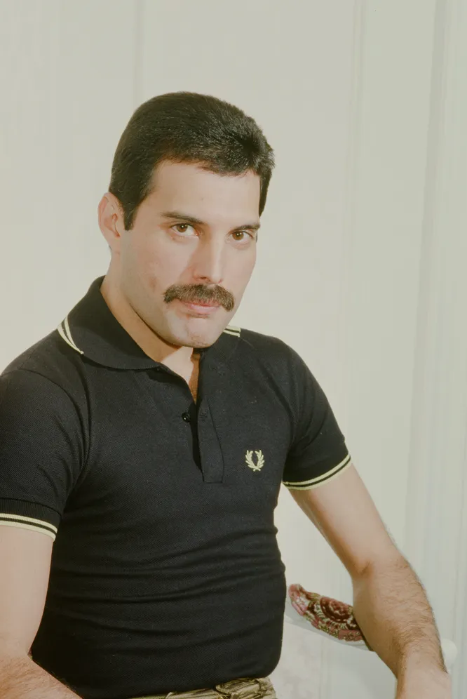
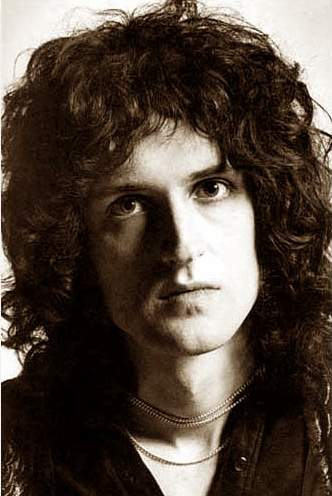
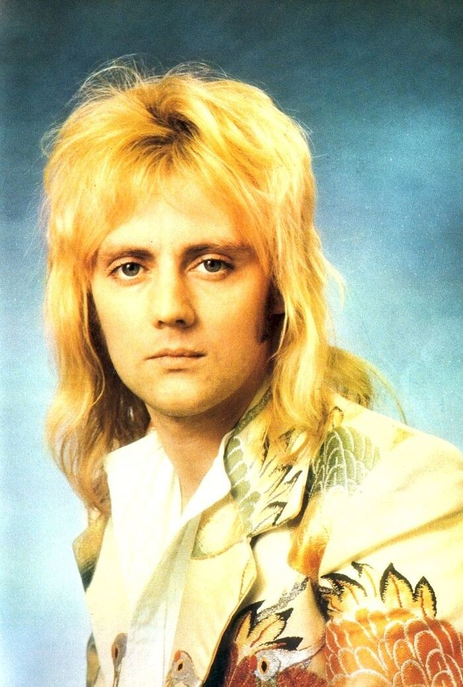
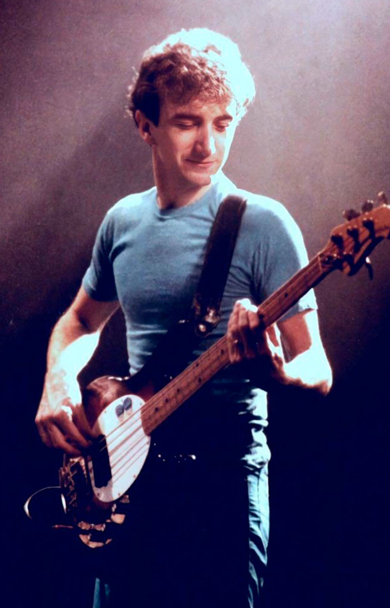

Состав группы

Фредди Меркьюри
Вокал, пианино

Брайан Мэй
Гитара, вокал

Роджер Тейлор
Ударные, вокал

Джон Дикон
Бас-гитара
О группе
"Queen" — британская рок-группа, основанная в 1970 году. Она известна своими уникальными композициями, такими как "Bohemian Rhapsody", "We Will Rock You", "We Are the Champions" и многими другими. Группа внесла огромный вклад в развитие рок-музыки и стала настоящей легендой мировой сцены.
Состав группы включал талантливых музыкантов, каждый из которых внёс свой вклад в создание уникального звучания, которое узнаваемо во всем мире.
Хронология
- 1970: Основание группы в Лондоне.
- 1973: Выпуск дебютного альбома "Queen".
- 1975: Релиз "Bohemian Rhapsody" и альбома "A Night at the Opera".
- 1985: Легендарное выступление на Live Aid.
- 1991: Уход из жизни Фредди Меркьюри.
- 2004: Возвращение на сцену с Полом Роджерсом.